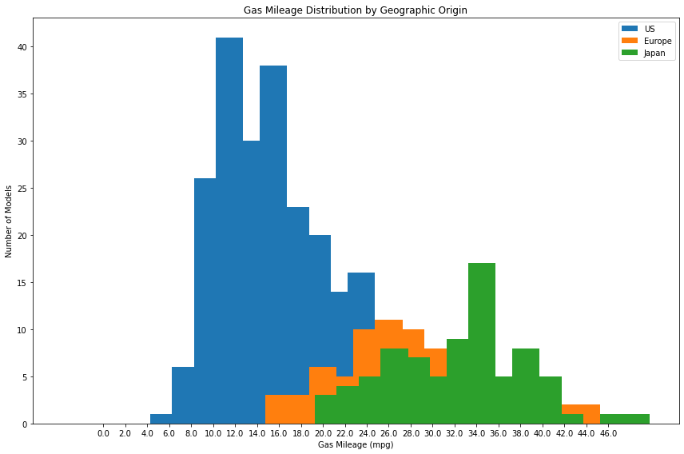
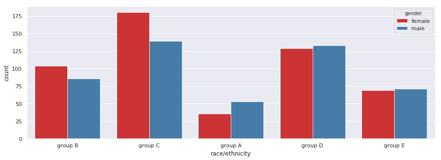
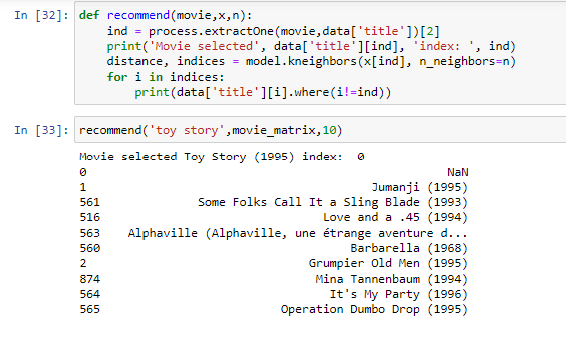
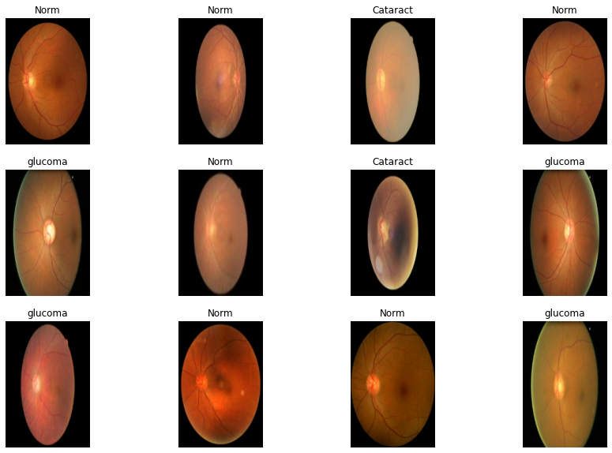

I visualize the The Gas Mileage over the Countries of USA, Europe and Japan. I also shows the Temporal Evolution of Gas Mileage by Origin and Model Year.
I Provide the scatter diagram of how GAS MPG, Weight, Horsepower and Displacement distribute over the countries.


You will find some basic statistical insights and their graphical visualizations which are more precise and understandable

A simple and congnitive approch used this system with K-Nearest Neighbour to get recommendation of movies
I have analyzed and processed Fundus images of more than 5K with the Deep Learning algorithm i.e CNN(convolutional neural network).
CNN algorithm has accomplished a performance accu- racy of 91% based on the given Fundus dataset. I have also utilized various
image preprocessing methods to nurture the efficiency of our deep learning algorithm to perform well on this huge dataset.
